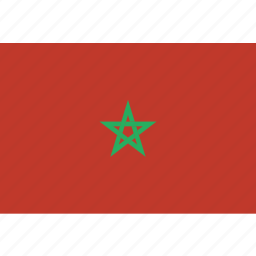

La vie parascolaire fait référence aux activités et aux engagements des étudiants en dehors de leur programme académique régulier. Ces activités complémentaires peuvent jouer un rôle important dans le développement personnel, social et professionnel des étudiants. C'est pour ca que ISTA cité de l'air s'efforce toujours de fournir cela à ses stagiaires.
La vie parascolaire fait référence aux activités et aux engagements des étudiants en dehors de leur programme académique régulier. Ces activités complémentaires peuvent jouer un rôle important dans le développement personnel, social et professionnel des étudiants. C'est pour ca que ISTA cité de l'air s'efforce toujours de fournir cela à ses stagiaires.
La vie parascolaire offre aux étudiants l'opportunité de développer des compétences transférables, d'explorer de nouveaux intérêts, de tisser des liens sociaux et de contribuer de manière significative à la vie étudiante. Elle peut également être un moyen de se détendre, de gérer le stress académique et de trouver un équilibre entre les responsabilités académiques et personnelles.
Don du sang
"Don du sang" est une initiative simple qui change la vie de nombreuses personnes été réalisée par l'institut spécialisée de technologie appliquéé CA,en partenariat avec le centre de Transition Sanguine de l'hopital régional d'El jadida, organise une journée du don du sang dans l'espace de l'institut
A cette tribunne ISTA CA remercie tous les les profs,cadre administratives et les stagiaires qui ont osée a participée et encourage les autres de ne pas hésiter de participer à ce acte humaine.


Marche verte 
ISTA CA a pris L’occasion de réaffirmer la détermination de préserver les valeurs sacrées du Royaume et de les inculquer aux générations montantes en vue de renforcer leur sentiment de patriotisme, d’appartenance nationale et d’identité marocaine, cette journée de célébration de la Glorieuse Marche Verte Marocaine (1975) vient souligner la fierté d’appartenance du corps administratif et professoral, ainsi que les stagiaires.
Une occasion donc de souligner l’importance de la mobilisation collective pour le développement multidimensionnel du Royaume du Maroc, et ainsi fêter un retour triomphal au giron de la mère patrie. Une marche singulière qui illustre la cohésion entre le trône et son peuple de ses constantes et valeurs sacrées de la nation marocaine, elle témoigne du génie de Feu Sa Majesté le Roi Hassan II, qui a réussi de manière très pacifique et très civilisée à manœuvrer la fin de la présence coloniale au Sahara Marocain. Porteuse d’innombrables leçons, cette marche singulière qui illustre la forte cohésion entre le Trône et le peuple et l’unanimité autour des constantes et des valeurs sacrées de la nation marocaine, témoigne du génie du Roi unificateur qui a réussi de manière civilisée et pacifique, à mettre un terme à la présence coloniale dans le Sahara marocain.